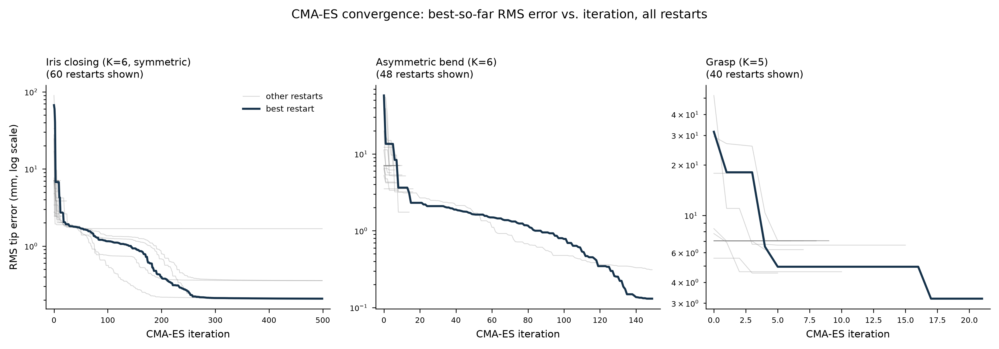
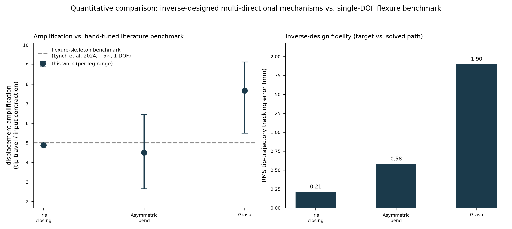

The gap
Engineered skeletal-muscle-tissue actuators are, at the tissue level, intrinsically uniaxial: a strip or ring of muscle contracts along one direction. But grasping, multi-axis bending, and iris-like closing all need multi-directional output from that single contractile input. The MIT Raman lab currently solves this by hand: patterning stamp geometry or tuning a compliant flexure skeleton per device, empirically, one target motion at a time. The Demaine lab's computational-origami and linkage-kinematics toolkit (curved-crease mechanisms, bar-and-hinge reduced-order models, coupler-curve inverse synthesis) is exactly the machinery needed to turn that hand-tuning into a search problem instead, but no published work connects the two.
Mechanism family
The design space is a radial-leg mechanism: a central ring that contracts under the muscle's scalar input, connected to K independent 2-bar legs arranged around it. Because each leg's six geometric parameters (ground pivot radius, drive angle, two bar lengths, and a 2-parameter coupler offset) are chosen independently, one common physical input maps to a different output amplitude and direction at each leg's tip: the mechanical basis for one muscle driving many directions at once.
Two forward-kinematics models were built and cross-validated to machine precision against each other and against the closed-form four-bar-linkage solution: a general nonlinear-least-squares bar-and-hinge solver, and a closed-form circle-circle-intersection model fast enough to drive hundreds of CMA-ES generations.
Inverse design
Given a target motion (K prescribed tip trajectories), CMA-ES searches leg geometry under physiological strain bounds (10–20% contraction) and a flat-fabricatable footprint constraint, chosen specifically because the feasibility boundary (a leg's circle-circle intersection can simply stop existing mid-sweep) is non-smooth and multimodal, ruling out gradient-based search.
A key finding came from the structure of the objective itself: because leg mechanics are independent and the loss is additive across legs, the naive 6K-dimensional joint search over an asymmetric target is exactly separable into K independent 6-dimensional single-leg searches (each also choosing a discrete knee-branch sign). This is both a correctness fix (the naive joint search silently locked some legs into permanently infeasible branches) and a large efficiency gain.

Results
All three target motions tested (grasp, asymmetric multi-axis bend, and iris-like radial closing) converge to fully kinematically feasible designs across the entire actuation sweep, with sub-2mm RMS tracking error and 4.5-7.7× displacement amplification, matching or exceeding the best hand-tuned single-direction literature design (~5×, Raman/Culpepper flexure skeleton) while additionally providing 5–6 independently steerable output directions from one input.

